#| eval=false
#install.packages(c("here", "dplyr", "vroom", "tidyr", "purrr")) #1 post
#install.packages(c("ggplot2", "cowplot", "glue", "ggtext", "ggrepel")) #2 post
library(here)
library(dplyr)
library(vroom)
library(tidyr)
library(purrr)
library(ggplot2)
library(glue)
library(ggtext)
library(ggrepel)
#| include=false
library(here)
library(dplyr)
library(vroom)
library(tidyr)
library(purrr)
library(ggplot2)
library(glue)
library(ggtext)
library(ggrepel)
library(tidyverse)
library(maps)#| include=false
#|
#devtools::install_dev("vroom")
library(vroom)
biotime_df <- vroom(here("posts", "rstats",
"biotime.zip"), delim = ",")
biotime_metadata <- vroom(here("posts", "rstats",
"biotime_meta.csv"), delim = ",")#| include=false
#|
biotime <- biotime_df %>%
select(id = STUDY_ID, year = YEAR, plot = PLOT,
abundance = sum.allrawdata.ABUNDANCE,
biomass = sum.allrawdata.BIOMASS, sp = GENUS_SPECIES, LONGITUDE, LATITUDE)
metadata <- biotime_metadata %>%
select(STUDY_ID:ORGANISMS) %>%
rename(id = STUDY_ID)#| include=false
merge_df <- left_join(biotime, metadata, by = "id")Data visualization with ggplot2
Besides being able to clean and explore data in ecology, it is also important to know how to visualize and present the patterns you found. Here I’m gonna show very briefly how to create histograms, bar plots, box plots and scatter plots with ggplot2. Further, I’m going through how to combine different plots using cowplot. I will try to use the knowledge we gathered in our previous post, i.e. using dplyr and purrr functions.
We can use the data we joined last time (merge_df) to start making some graphs.
In ggplot we start the figure with the function ggplot() and then use aes(x,y) to tell the function the variables we want to plot. Afterwards, we can add several arguments to our plot using +, which is something similar to %>% in dplyr.
Histograms
Let’s start by a simple histogram, checking the distribution of years of sampling among studies.
merge_df %>%
group_by(id) %>%
summarise(n_year=n_distinct(year)) %>%
ungroup %>%
ggplot(aes(x=n_year))+
geom_histogram()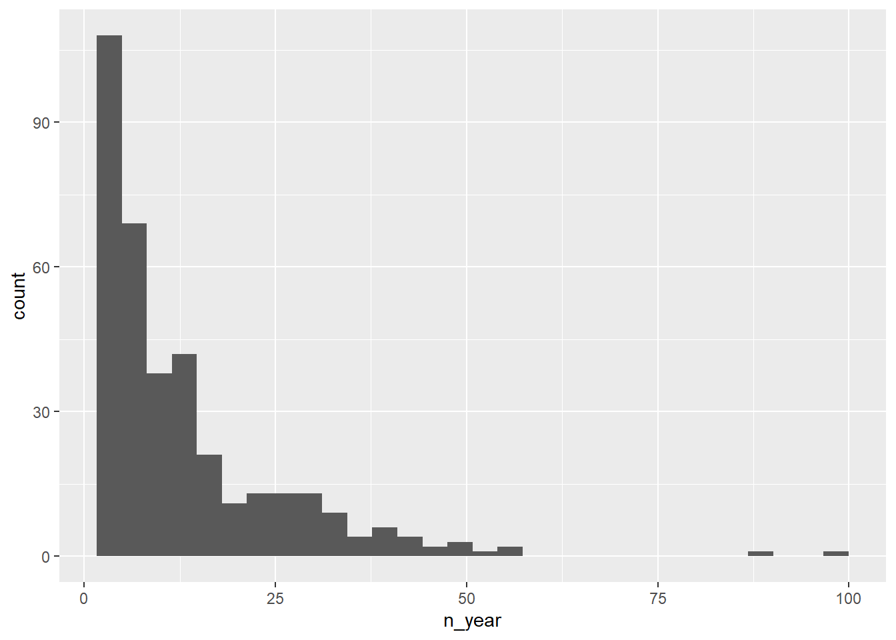
Although we can see the distribution of years, this plot can be improved. So, let’s change the x axis, specifying the breaks we want, put some colour (red), modify the opacity (with alpha), and change axis’ title (with labs()).
year_histplot <-merge_df %>%
group_by(id) %>%
summarise(n_year=n_distinct(year)) %>%
ungroup %>%
ggplot(aes(x=n_year))+
geom_histogram(bins=50,fill = "red", alpha=.5)+
scale_x_continuous(breaks = seq(2, 100, by = 5))+
labs(x="Years of sampling", y="Number of studies")
year_histplot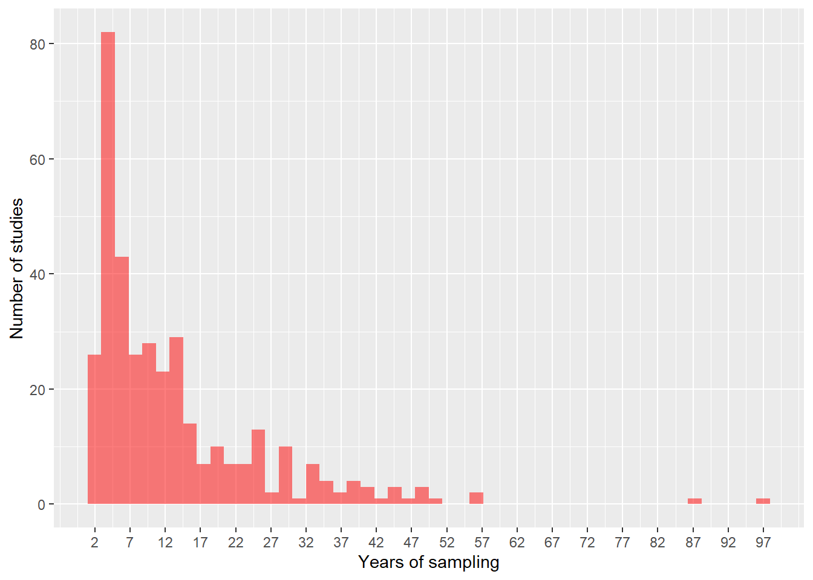
Ok.. so now we can see that most studies range from 5-15 years of sampling, and we have two studies with very long term sampling (88 and 97 years, respectively)
Barplots
Now let’s check the number of studies per taxa and climate, using geom_col().
merge_df %>%
group_by(TAXA) %>%
summarise(n_studies=n_distinct(id)) %>%
ungroup %>%
ggplot(aes(x=TAXA, y=n_studies))+
geom_col()+
labs(x="", y="Number of studies")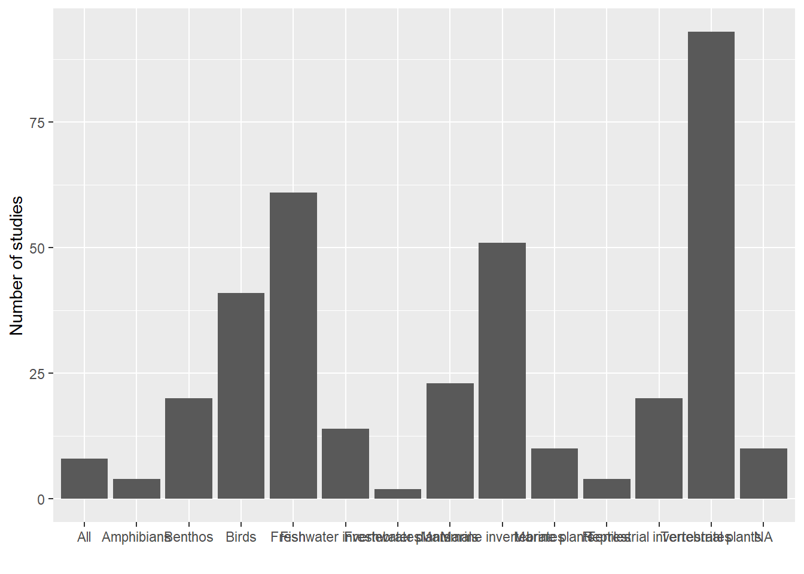
Now I will
- add a legend with different colors based on taxa (
aes(fill=...)) - remove the NA group (
filter(!is.na()) - order the groups from min to max number of studies (
fct_reorder()) - get rid of x axis’ title, text and ticks (
theme(axis...)
taxa_barplot<-merge_df %>%
group_by(TAXA) %>%
summarise(n_studies=n_distinct(id)) %>%
ungroup %>%
filter(!is.na(TAXA)) %>%
mutate(TAXA = fct_reorder(TAXA, n_studies)) %>%
ggplot(aes(x=TAXA, y=n_studies, fill = TAXA))+
geom_col()+
theme(axis.title.x = element_blank(),
axis.text.x = element_blank(),
axis.ticks.x = element_blank())+
labs(x="", y="Number of studies",
title = "Top 4 number of studies per taxa: Terrestrial plants, fish,\nmarine invertebrates and birds")
taxa_barplot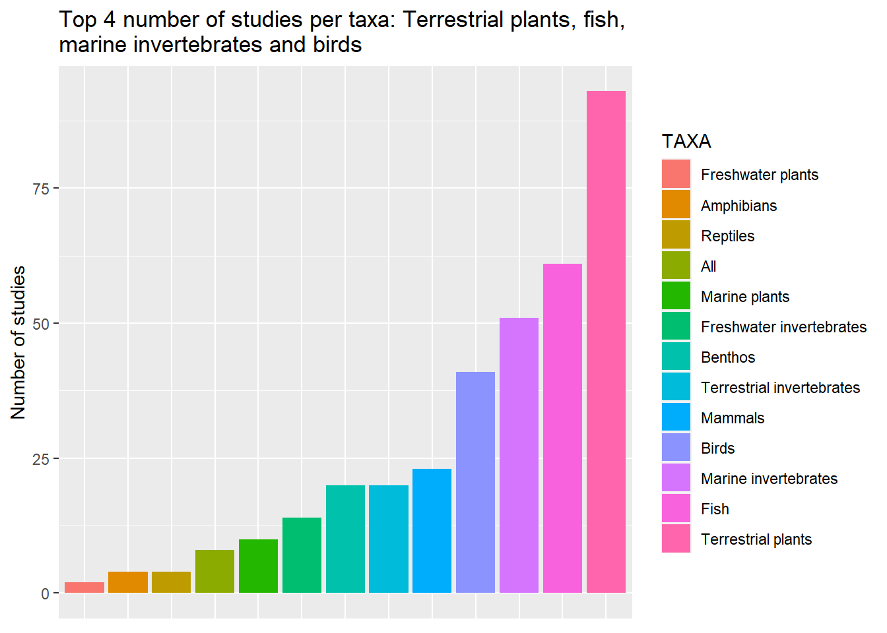
Let’s check the same for climate
climate_barplot <- merge_df %>%
group_by(CLIMATE) %>%
summarise(n_studies=n_distinct(id)) %>%
ungroup %>%
filter(!is.na(CLIMATE)) %>%
mutate(CLIMATE = fct_reorder(CLIMATE, n_studies)) %>%
ggplot(aes(x=CLIMATE, y=n_studies, fill = CLIMATE))+
geom_col()+
theme(axis.title.x = element_blank(),
axis.text.x = element_blank(),
axis.ticks.x = element_blank())+
labs(x="", y="Number of studies",
title = "Most studies come from Temperate climate")
climate_barplot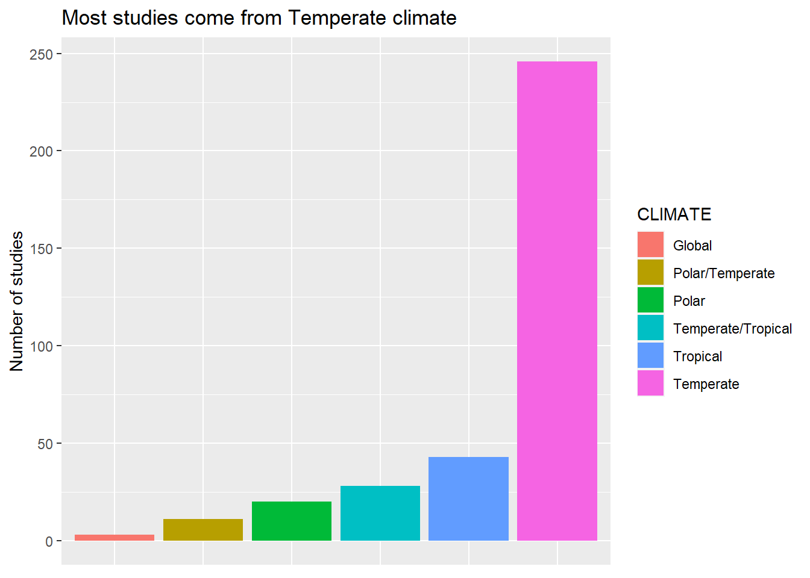
Boxplots
Now let’s filter the top4 taxa, calculate the species richness per study and make a boxplot. Some studies have plots other not. To make things simple, let’s consider the overall number of species found each year.
rich_plot <- merge_df %>%
filter(TAXA %in% c("Birds",
"Fish",
"Terrestrial plants",
"Marine invertebrates")) %>%
group_by(id,year) %>%
mutate(richness = n_distinct(sp),.after="abundance") %>%
ungroup %>%
group_by(id) %>%
distinct(richness, CLIMATE,year,id,TAXA,PROTECTED_AREA) %>%
mutate(n_year = n_distinct(year)) %>%
filter(n_year > 10)rich_plot %>%
mutate(TAXA = fct_reorder(TAXA,richness)) %>%
ggplot(aes(x=TAXA, y = richness)) +
geom_boxplot()+
scale_y_log10()+
labs(x="Taxa", y="Number of species")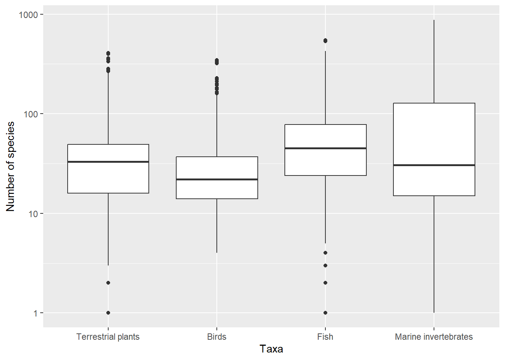
Sometimes we also need to make box plots within groups. For example, let’s look at the richness of different taxa in both protected and non-protected areas. Let’s use scale_y_log10() to make things more comparable.
rich_plot %>%
mutate(TAXA = fct_reorder(TAXA,richness)) %>%
ggplot(aes(x=TAXA, y = richness, fill=PROTECTED_AREA)) +
geom_boxplot()+
scale_y_log10()+
labs(x="Taxa", y="Number of species")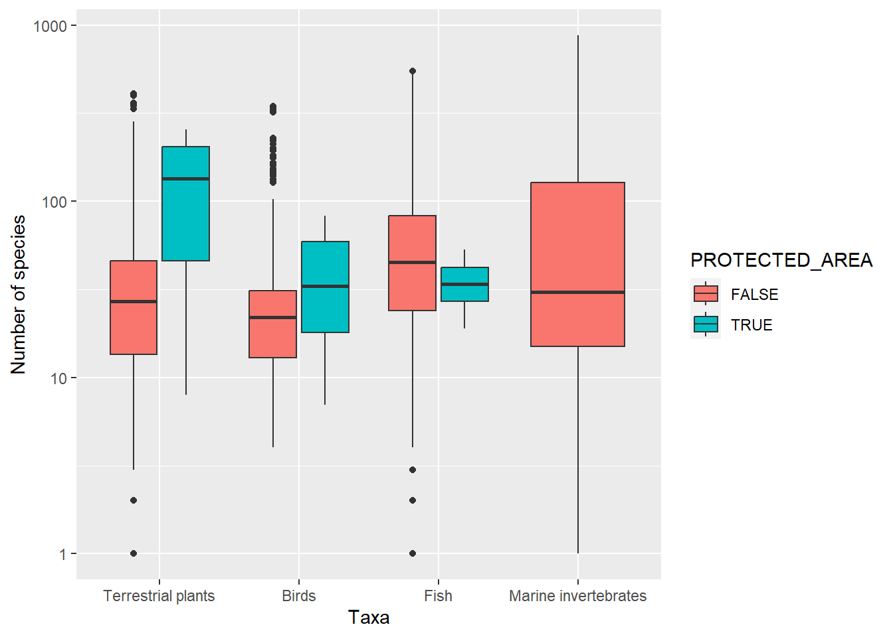
Previously, I showed how to reorder groups in our plot. Sometimes we also want to reorder labels manually. We can do that using fct_relevel(). Note that as “Protected_area” is not a factor, we have to transform it first; here I used mutate_at()
rich_plot %>%
ungroup %>%
mutate_at("PROTECTED_AREA", factor) %>%
mutate(PROTECTED_AREA = fct_relevel(PROTECTED_AREA,c("TRUE", "FALSE"))) %>%
ggplot(aes(x=TAXA, y = richness, fill=PROTECTED_AREA)) +
geom_boxplot()+
scale_y_log10()+
labs(x="Taxa", y="Number of species")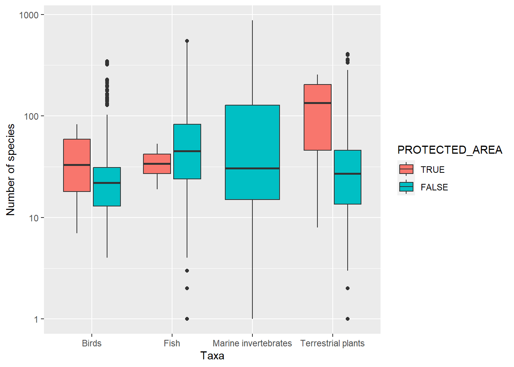
Scatterplots
Let’s explore how the number of species is changing over time. First let’s check the species richness of fish based on study id (only those with more than 30 years)
rich_plot %>%
filter(TAXA == "Fish", n_year>30) %>%
ggplot(aes(x=year, y = richness, colour = as.factor(id)))+
geom_point()
We can also add a regression line with geom_smooth()
rich_plot %>%
filter(TAXA == "Fish", n_year>30) %>%
ggplot(aes(x=year, y = richness, colour = as.factor(id)))+
geom_point()+
geom_smooth(method = "lm", se=F)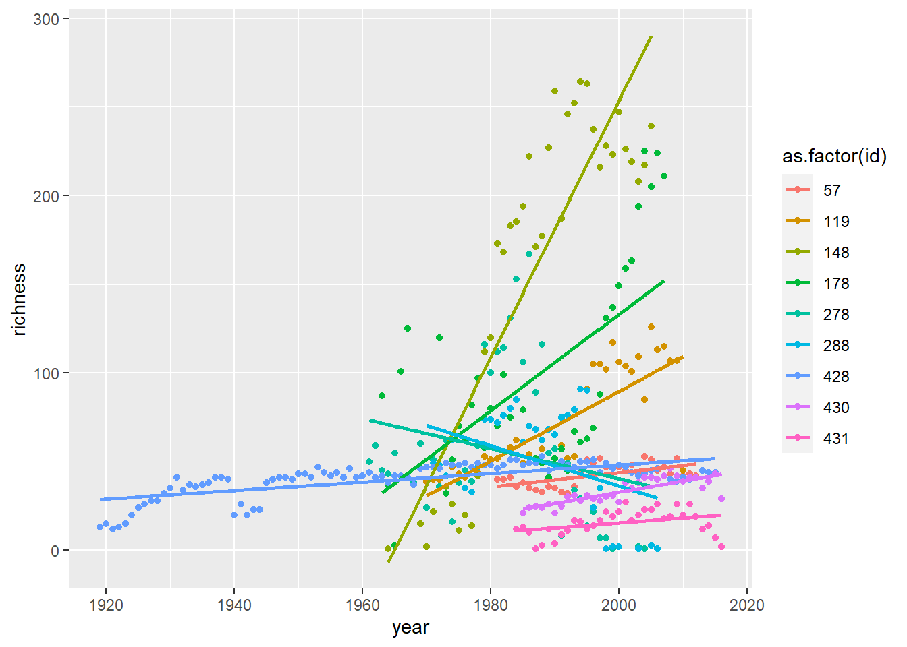
We can also use interaction to group variables. Let’s try to check the same graph grouping study id and climate.
rich_plot %>%
filter(TAXA == "Fish", n_year>30) %>%
ggplot(aes(x=year, y = richness, colour = interaction(id,CLIMATE)))+
geom_point(alpha = .2)+
geom_smooth(method = "lm", se=F)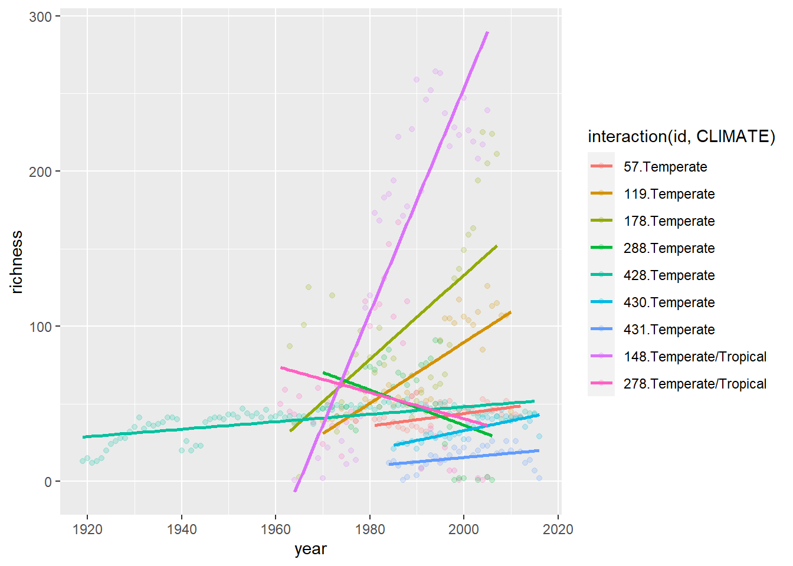
As we’ve seen before, most studies in biotime data set are from temperate climate. Here, it seems that the fish species richness is increasing over time for most studies. Please note that the idea here is only to show some tools to visualize our data, not deal with fitting model issues :)
Nested plots with facet_wrap() and nest
Here we are exploring only fishes, but we could also plot the same figure for each taxa we have at once. There are two main ways to do so. The first one is with facet_wrap(), whereas the second we use nest() and map2() - nesting our data by taxa, making each figure separately and combining them afterwards. Although facet_wrap() is handy for quick graphs when exploring data, most likely, when making more complex graphs, I do prefer the second option because it allows me to modify each figure separately. Let’s check both methods.
First with facet_wrap():
rich_plot %>%
filter(n_year>30, CLIMATE == "Temperate") %>%
ggplot(aes(x=year, y = richness, colour = as.factor(id)))+
geom_point()+
geom_smooth(method = "lm", se=F)+
scale_y_log10()+
facet_wrap(~TAXA)+
labs(x="Year", y="Species richness")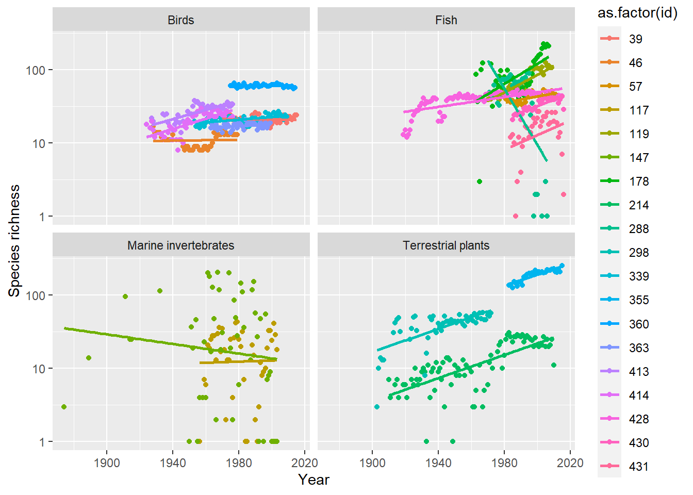
This one is very simple, you just need to set the function and variable you want to split within panels. Now let’s try using nest() and map2(). With this approach, we first nest our data by taxa and then, as the column is in a list format, we create a new column (plot) with mutate() and make the plots using map2() and ggplot().
library(glue)
nested_plots<-rich_plot %>%
filter(n_year>30, CLIMATE == "Temperate") %>%
arrange(desc(year)) %>%
group_by(TAXA) %>%
nest() %>%
mutate(plot = map2(data, TAXA, ~ggplot(data = .x, aes(x=year, y = richness, colour = as.factor(id)))+
ggtitle(glue("This taxa is: {.y}"))+
geom_point(alpha=.2)+
#geom_smooth(method = "lm",se=F)))
geom_smooth(method = "gam", formula = y ~ s(x, bs = "cs",k=5),
se=F, size=1.5)+
labs(colour="Site")))Here I also presented a new package glue very useful to deal with strings, in this case the title of each plot based on taxa names.
We could also nest the data by, for example, TAXA and id. In this way we get a separate figure for each study site and TAXA.
nested_plots2 <- rich_plot %>%
filter(n_year>30, CLIMATE == "Temperate") %>%
group_by(id,TAXA) %>%
nest() %>%
mutate(plot = map2(data, id, ~ggplot(data = .x, aes(x=year, y = richness, colour = CLIMATE))+
ggtitle(glue("This study site is: n° {.y}"))+
geom_point(alpha=.4)+
stat_smooth(method = "gam", formula = y ~ s(x, bs = "cs"), se=F, size=1.5)))
nested_plots2$plot[[1]]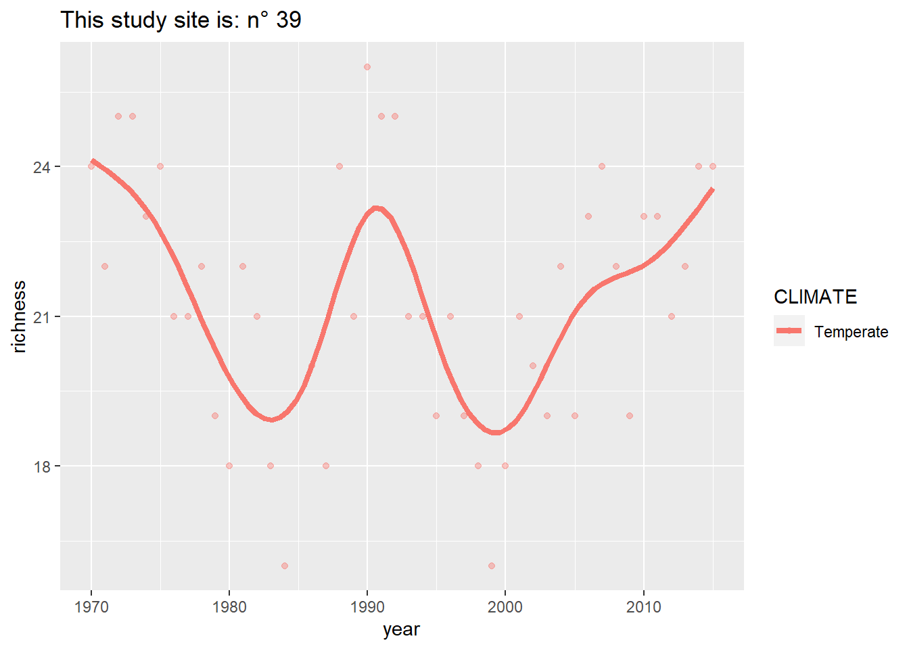
Let’s use the first object though (nested_plots). Now it is possible to change each plot separately. For example, let’s change the colour pallete of each plot (we can add whatever change we want) and combine them.
fish_fig <- nested_plots$plot[[1]] + scale_colour_brewer(palette = "Set1")
bird_fig <- nested_plots$plot[[2]] + scale_colour_brewer(palette = "Set2")
plant_fig <- nested_plots$plot[[3]] + scale_colour_brewer(palette = "Set3")
marine_inv_fig <- nested_plots$plot[[4]] + scale_fill_brewer(direction = -1) + theme_dark()Combining plots with cowplot
To combine plots we can use different packages. I’m more used to cowplot (https://wilkelab.org/cowplot/articles/plot_grid.html) but patchwork seems to be a great option as well (https://github.com/thomasp85/patchwork).
In cowplot we have the function plot_grid() to combine plots.
library(cowplot)
all_plots <- plot_grid(plant_fig, bird_fig, fish_fig, marine_inv_fig)
all_plots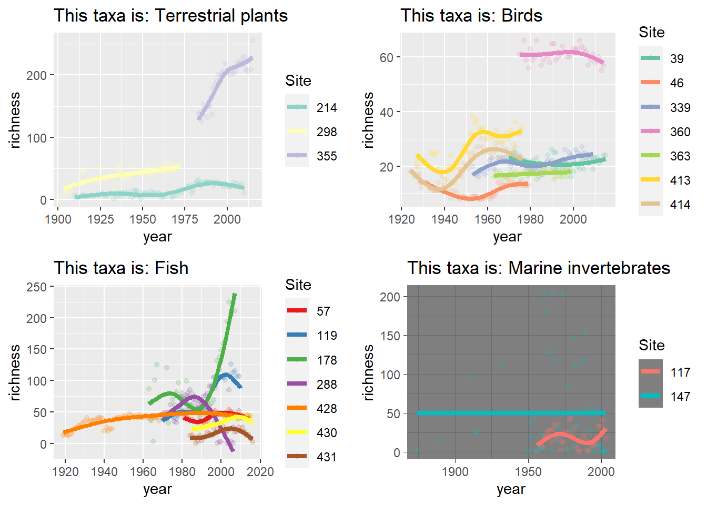
From this poor exploratory analysis, it seems that the species number variation over time is rather dependent on taxa / study, but I’d guess that we have, overall, more increases than decreases. However, we would have to take into account sampling effort, number of plots, grain size etc, this is not the point of this post though.
Let’s understand how cowplot works using those bar plots we created at the beginning (taxa and climate ones).
plot_grid(taxa_barplot, climate_barplot,year_histplot)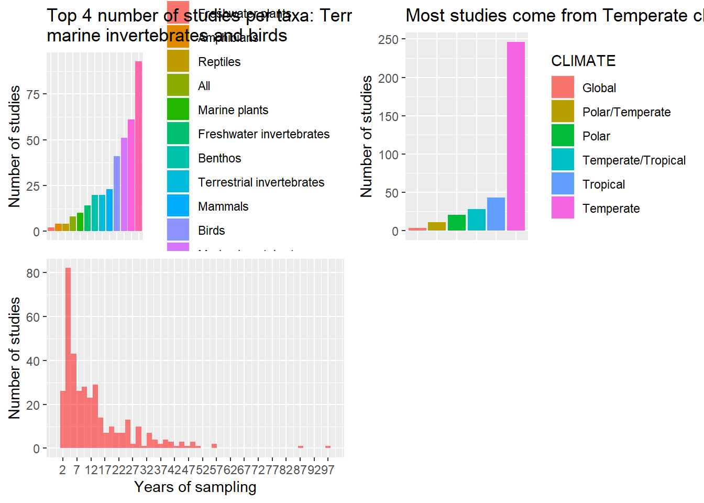
As you can see the plots are not aligned. We can correct that with align:
plot_grid(taxa_barplot, climate_barplot,year_histplot, align = "h")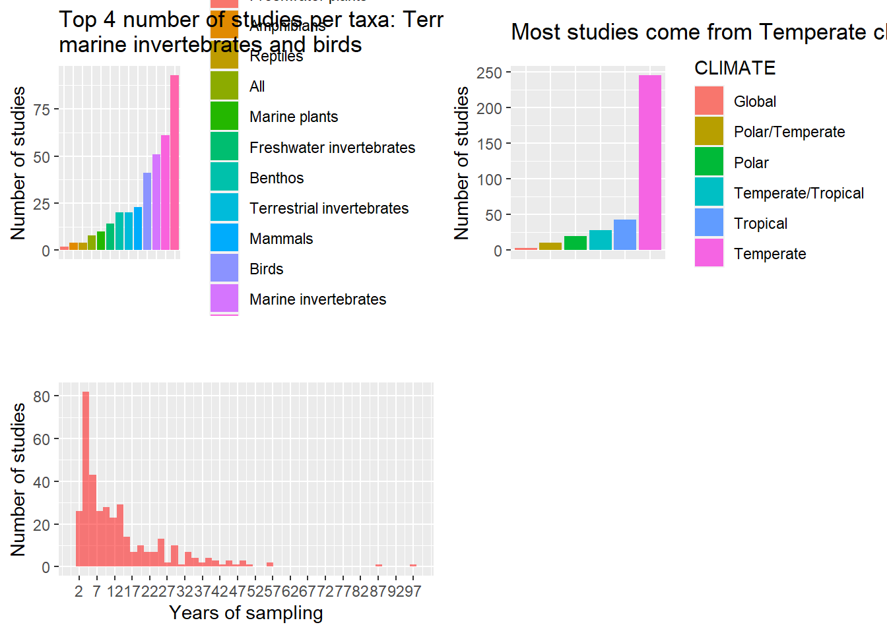
Let’s say we want to put the histogram in the middle of the figure. We can use some tricks in cowplot to place the figure where we want. For example, we can set the number of rows and columns that our grid will have with ncol() and nrow() and control the distance between those grids with rel_heights() and rel_widths(). So, one way to place the histogram in the middle of the second line, would be:
first_line <- plot_grid(taxa_barplot, climate_barplot)
second_line <- plot_grid(year_histplot)
plot_grid(first_line, second_line, nrow=2)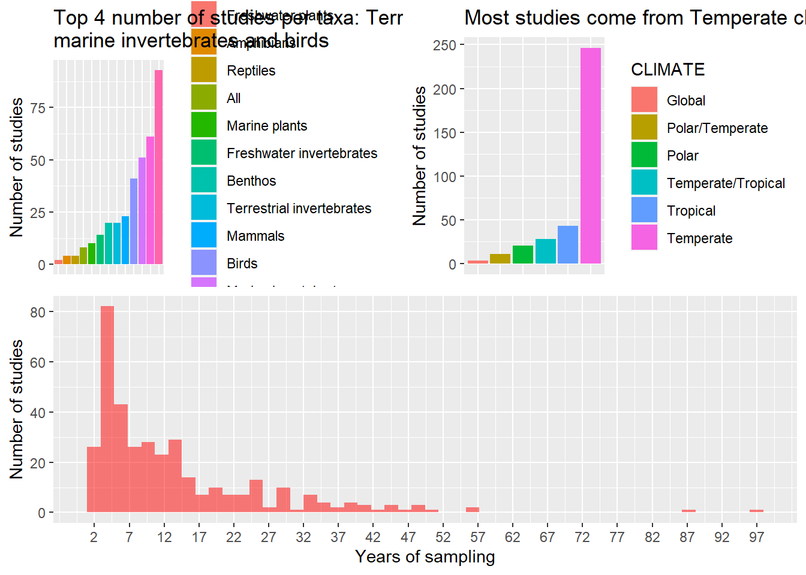
Histogram is in the second line, but it is too wide. To make it narrow, I usually use empty grids to make this dirty job. We can add two empty grids in both sides and set the rel_widths() of each grid, “squeezing” the middle panel.
second_line <- plot_grid(NULL, year_histplot, NULL, ncol=3, rel_widths = c(.5,1,.5))
combine_both2 <- plot_grid(first_line, second_line, nrow=2, align = "hv")Sometimes we also have to deal with legends. For example, when different panels have a shared legend. Let’s duplicate the Taxa plot just to exemplify it:
plot_grid(taxa_barplot, taxa_barplot)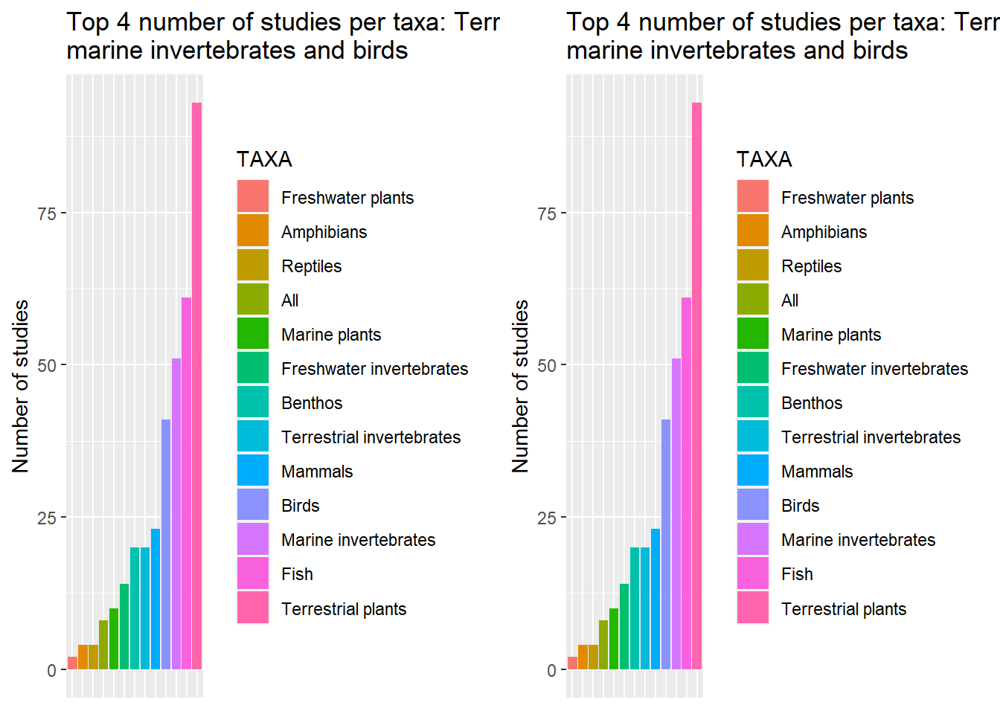
Let’s keep only one legend using get_legend().
legend <- get_legend(taxa_barplot)Create the new figure without a legend (legend.position = "none")
taxa_noleg <- taxa_barplot + theme(legend.position = "none") # now we create a new object of the figure without a legendAnd plot both figures and legend
plot_grid(taxa_noleg, taxa_noleg, legend)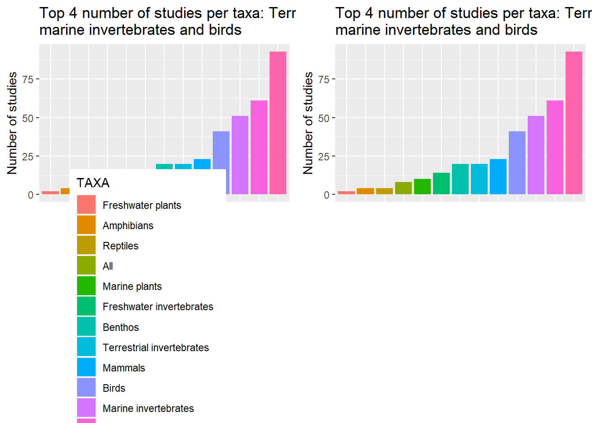
We can play again with ncol and rel_width to correct the figure
plot_grid(taxa_noleg, taxa_noleg, legend, ncol=3, rel_widths = c(.9,.8,.3))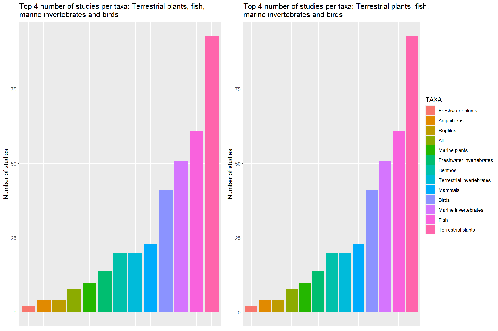
A more complex one:
p1 <- plot_grid(taxa_noleg, taxa_noleg,taxa_noleg,ncol=3)
p2 <- plot_grid(NULL, legend, NULL,ncol=3)
p3 <- plot_grid(taxa_noleg, taxa_noleg,taxa_noleg,ncol=3)
plot_grid(p1, p2, p3, nrow=3, rel_heights =c(.8,1,.8)) #note that now I use rel_heights to control the distance between rows.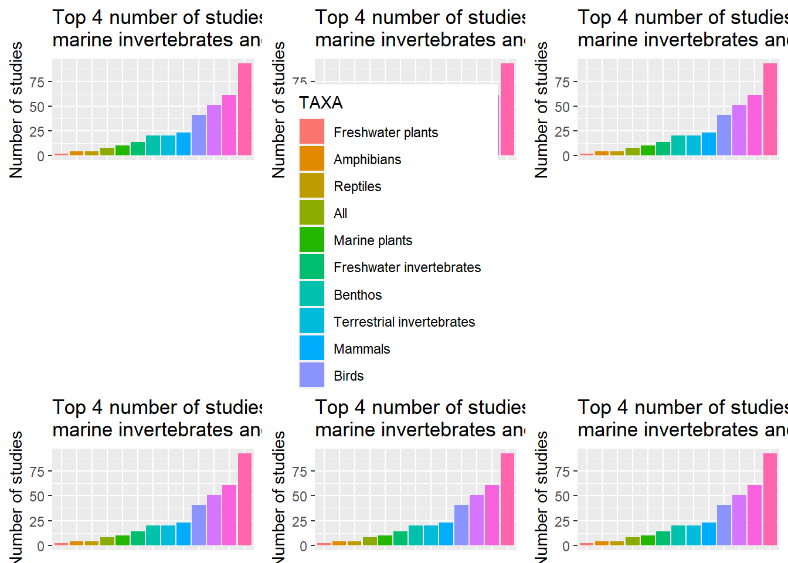
Maps with ggplot
Last but not least, we can also make maps with ggplot. Let’s make a map to see how the sites are distributed around the world
library(ggplot2)
biotime_map <- merge_df %>%
filter(!is.na(TAXA)) %>%
select(id,year,sp,TAXA,LATITUDE,LONGITUDE) %>%
group_by(id) %>% # group by study id
mutate(n_sp = n_distinct(sp), # number of species per study
n_year = n_distinct(year)) %>% #number of years of sampling
select(-sp,-year) %>% #get rid of sp and year columns
filter(row_number()==1) # some sites have more than one long and lat, to make it simple, I will filter the first line of each studyIn ggplot we can make an empty object (ggplot()) and combine different data frames within the ggplot() function. For example, let’s create the object world to create the world map
world<- map_data("world")
ggplot() +
geom_map(
data = world, map = world,
aes(long, lat, map_id = region),
color = "white", fill = "gray50", size = 0.05, alpha = 0.2
)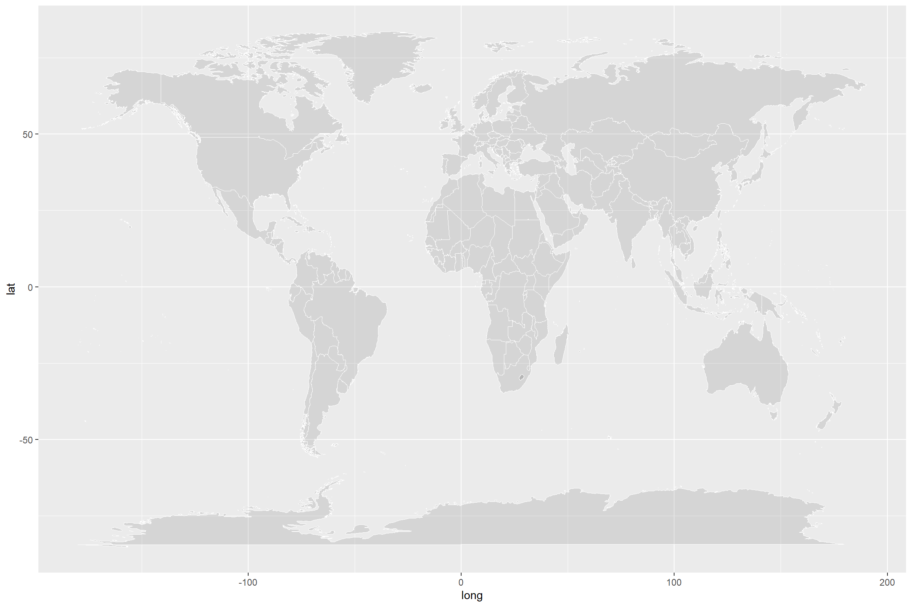
And now we can combine the world dataframe with our data biotime_map to make the map.
A very simple map, to see how the sites are distributed, would be something like this.
ggplot() +
geom_map(
data = world, map = world,
aes(long, lat, map_id = region),
color = "white", fill = "gray50", size = 0.05, alpha = 0.2
) +
geom_point(
data = biotime_map,
aes(LONGITUDE, LATITUDE),
alpha = 0.8
) +
theme_void() +
labs(x = NULL, y = NULL, color = NULL)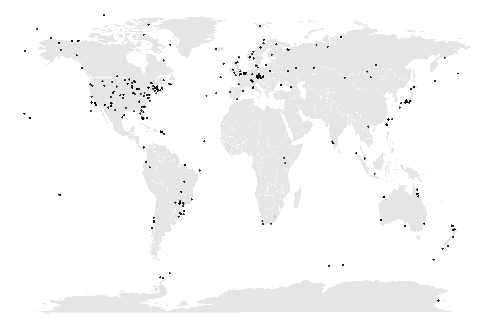
From here, we can add whatever ggplot argument and functions we want. For example, let’s colour the points based on taxa
ggplot() +
geom_map(data = world, map = world,
aes(long, lat, map_id = region),
color = "white", fill = "gray50", size = 0.05, alpha = 0.2) +
geom_point(data = biotime_map,
aes(LONGITUDE, LATITUDE, colour=TAXA), size = 3) +
theme_void() +
labs(x = NULL, y = NULL, color = NULL)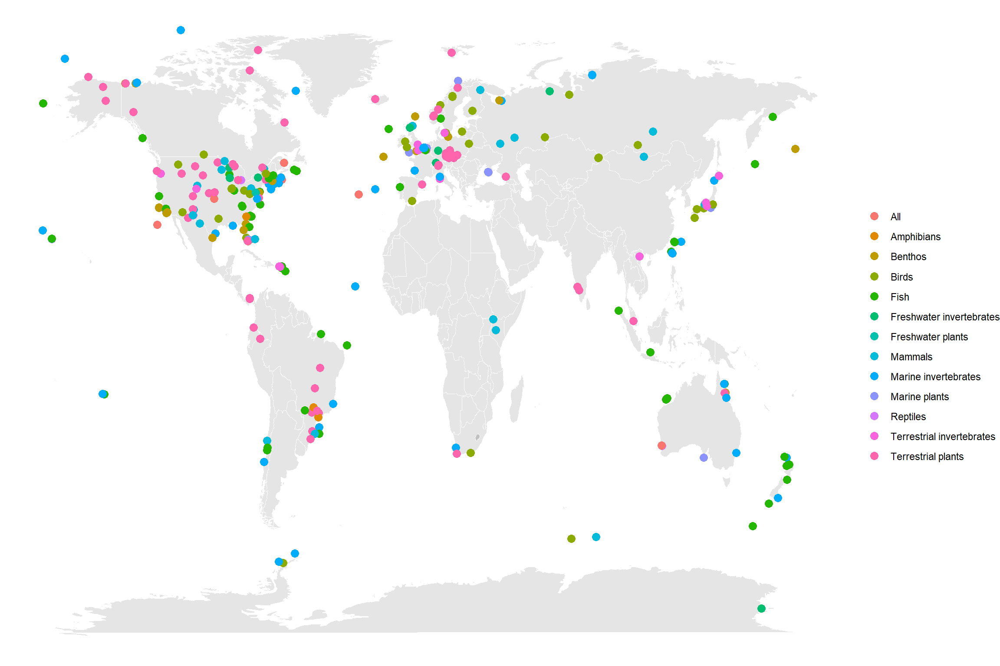
Or even to combine many things and make a more complex map.
# Just for fun, let's check the top5 sites with longest time series and highest number of species
top5_y <- biotime_map %>%
arrange(desc(n_year)) %>%
head(5) %>% rownames_to_column() %>%
mutate(rank_y = glue::glue("#{rowname} = {n_year} years - {TAXA}")) %>% select(id,rank_y)
top5_sp <- biotime_map %>%
arrange(desc(n_sp)) %>%
head(5) %>% rownames_to_column() %>%
mutate(rank_sp = glue::glue("#{rowname} = {n_sp} species - {TAXA}")) %>% select(id,rank_sp)
top5_y# A tibble: 5 × 2
# Groups: id [5]
id rank_y
<dbl> <glue>
1 428 #1 = 97 years - Fish
2 214 #2 = 88 years - Terrestrial plants
3 339 #3 = 57 years - Birds
4 298 #4 = 56 years - Terrestrial plants
5 147 #5 = 51 years - Marine invertebratestop5_sp# A tibble: 5 × 2
# Groups: id [5]
id rank_sp
<dbl> <glue>
1 162 #1 = 5625 species - Benthos
2 187 #2 = 4415 species - Benthos
3 110 #3 = 4119 species - Benthos
4 186 #4 = 4080 species - Benthos
5 129 #5 = 2561 species - Marine invertebratesggplot() +
geom_map(data = world, map = world,
aes(long, lat, map_id = region),
color = "white", fill = "gray20", size = 0.05, alpha = 0.2) +
geom_point(data = biotime_map,
aes(LONGITUDE, LATITUDE, colour=TAXA), size =2) +
theme_void() +
# Here the idea is to create a label for the top5 sites with the longest time series
ggrepel::geom_label_repel(
data=(biotime_map %>%
filter(id %in% top5_y$id) %>%
left_join(top5_y, by = "id")), #first I filtered only the top10 sites and combined the "rank" column I had in "top10" object
size = 3,
colour="blue",
box.padding = unit(4, 'lines'), #distance between the labels and points
point.padding = unit(.1, 'lines'), #distance between the "arrows" and points
nudge_x = -3,
fill = alpha(c("grey"),0.5), #making the label background transparent
aes(x=LONGITUDE,
y=LATITUDE,
label=as.character(rank_y))
)+
# We can do the same for labelling the top5 richest sites
ggrepel::geom_label_repel(
data=(biotime_map %>%
filter(id %in% top5_sp$id) %>%
left_join(top5_sp, by = "id")),
size = 3,
colour = "red",
box.padding = unit(.8, 'lines'),
point.padding = unit(.1, 'lines'),
nudge_x = -2,
fill = alpha(c("grey"),0.8),
aes(x=LONGITUDE,
y=LATITUDE,
label=as.character(rank_sp))
)+
labs(x = NULL, y = NULL, color = NULL,
title ="Top 5 sites with the <span style='color:blue;'><strong>longest time series</strong></span> and <span style='color:red;'><strong>highest number of species</strong></span>")+ # Here is a nice way to have colour in titles using `ggtext`
theme(plot.title = element_markdown(lineheight = 1.1))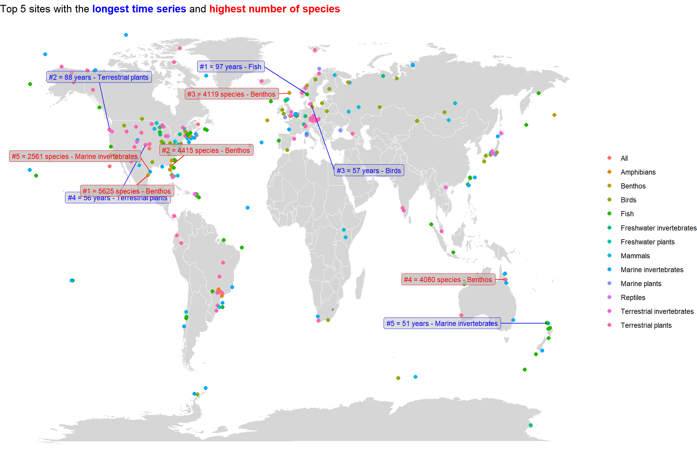
Anyway, sky and common sense (something I didn’t have here) are the limit. If you want to learn more ggplot, I do recommend to start following some ggplot wizards (e.g. Thomas Lin Pedersen, Georgios Karamanis et al.) and the #TidyTuesday community both on Twitter and GitHub.